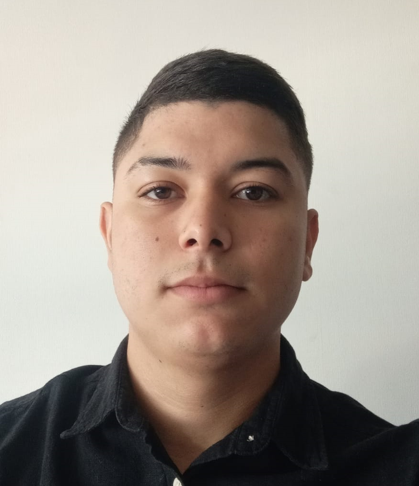

GUSTAVO ANDRES NOUEL AGUILAR
Quien soy
Soy Gustavo Nouel, venezolano, radicado hace casi 4 años en Chile, graduado en técnico superior en informática. Me apasiona el mundo de la tecnología, desde que egresé en la Universidad abandone un poco el mundo del desarollo web pero me encantaria retomarlo. Además, tengo un gran interés en el motociclismo, por lo que decidí emprender un negocio que combina ambas pasiones: una tienda online de accesorios para moto. Me siento muy motivado y comprometido con mi emprendimiento, y estoy seguro de que, con trabajo duro y dedicación, puedo hacerlo crecer y tener éxito.
Datos personales
- Fecha de Nacimiento: 08-03-1999 (23 años)
- Lugar de Nacimiento: Yaracuy, Venezuela
Formación
- Técnico Superior en Informática, Venezuela (2019)
- Curso Técnico en Reparación y Mantenimiento de Computadores (2020)
- Curso de Emprendimiento y Marketing Digital (2022)
Hobbies
- Tenis de Mesa
- Motociclismo
- Técnologia